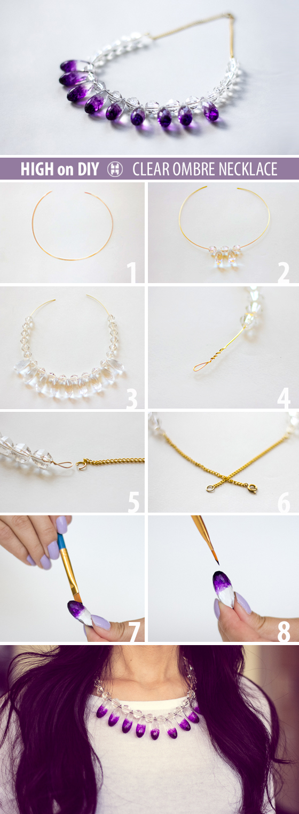

2015-04-30
設計的門檻其實沒有想像中的高，誰說一定要有複雜的藍圖，或是特別的木工，才能稱之為設計呢？其實，將日常生活中的許多素材DIY一下，就能成為很有設計感的手工藝品，不論是自己用、送親朋好友，甚至是開個小店、參加創意市集販售，DIY設計小物都受到許多人的青睞。
當然，DIY設計小物也可以加入創用CC的行列，利用公眾授權的方式分享自己的DIY心得、小撇步、製作流程圖、成品美照，讓其他人可以更簡單的取用、改造、再次分享，而且也會吸引其他愛好的同道主動加入討論。
這次簡單介紹國內外五個DIY設計小站採用創用CC的案例，當然一定還有許多漏網之魚，歡迎各位主動推薦給創用CC計畫讓更多人知道喔!
Cheryl是一個手工藝自學者，商店裡陳設的東西總是無法滿足他，他總是想著「如果我可以自己做，我就能做出……」，因而四年前展開了裁縫自學之旅，並發現能創造出自己想像的東西是件非常興奮的事情。
他現在為一些雜誌寫文章、為一些手工藝供應商設計樣式，出了一本書，並經營一個網路商店Green Hedgehog販賣他的手工設計材料組。這個網站上也分享了許多裁縫技巧、製作流程，採創用CC「姓名標示—非商業性—禁止改作」授權，他很樂於和大家一起分享他的學習經驗，並希望能因此引發他人一起勇於體驗新事物。
來自印度、住在芝加哥的Rinchen Dé很喜歡有創意的東西，也很注意時尚潮流，DIY讓他同時滿足對於這兩方面的喜好，既可以獲得自己創作一些東西的滿足感，也可以不用花太多錢就保持在時尚尖端。
Rinchen Dé將他設計的飾品和服飾DIY成果和詳細的製作流程公開在部落格上，使用創用CC「姓名標示—非商業性—相同方式分享」授權，只要記得標註姓名、用在非商業性用途，並繼續用此授權分享，都歡迎加入他的DIY世界。
身為捲紙藝術的愛好者，Ann Martin在探索創意紙藝世界的同時，也將他的作品和大眾分享，希望能讓更多人認識捲紙藝術，也希望能激發大家對於紙藝的更多想像。
Ann Martin以前是個護士，現在則把時間花在設計紙藝上，並為書籍、雜誌、網站寫些說明指導文，他的網站以創用CC「姓名標示—非商業性」授權，文章主題包含基本的捲紙知識、不同主題的捲紙卡片設計、捲紙珠寶設計、情人節聖誕節專題等，除了照片和教學步驟外，他也會分享一些小技巧和材料推薦。
這是一個分享DIY教學和廢物利用方法的網站，每篇DIY教學都有清楚的照片和步驟說明，而且會很貼心的推薦相同主題的其它文章，網站採創用CC「姓名標示—非商業性—禁止改作」授權。除了分享DIY教學，這裡也開放投稿，且會協助活動或設計作品的推廣，甚至有一區DIY愛好者交流的討論區。
We Love DIY 手創玩家主要的DIY類型以紙類創意為主，最近應景的推出父親節卡片製作說明，快和親朋好友分享一下卡片製作說明，趁著八八節前夕動手做卡片傳達你的愛意吧！
小瓢蟲愛玩生活創藝http://www.wretch.cc/blog/ooya&category_id=11957718
看似一個簡單的部落格，其實提供的DIY五花八門，包含編織、羊毛氈、串珠、馬賽克、果凍蠟、橡皮擦印章、葫蘆彩繪、布類作品、手工皂、繡花等等，還有廢物利用的環保DIY，雖然多半沒有很仔細的步驟說明，然而都有製作過程的照片可以邊看邊學。
本網誌以創用CC「姓名標示—非商業性」授權，因此如果有想要改造這些作品，只要記得標註姓名，並用在非商業性用途上，就可以自行發揮囉。
High on DIY / 姓名標示—非商業性—相同方式分享